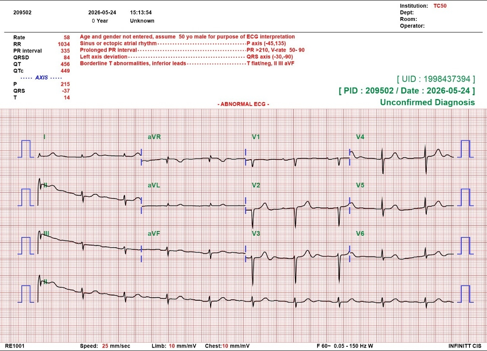
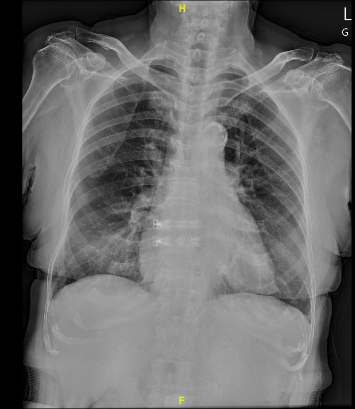
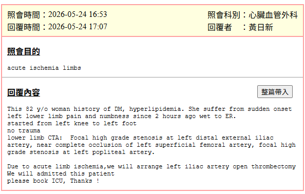
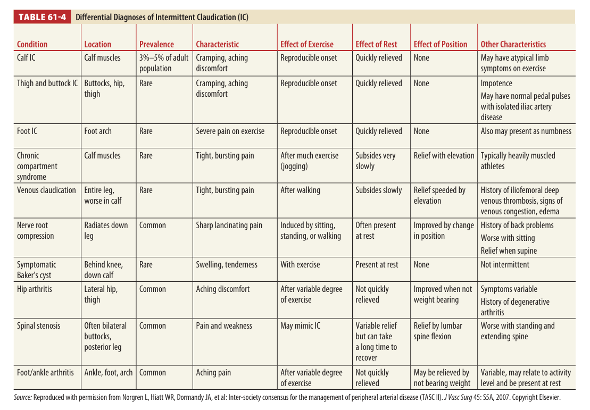

<!DOCTYPE html>
<html lang="en">
<head>
    <meta charset="UTF-8">
    <meta name="viewport" content="width=device-width, initial-scale=1.0">
    <title>Case-based Discussion: Acute Limb Ischemia</title>
    <!-- Tailwind CSS CDN -->
    <script src="https://cdn.tailwindcss.com"></script>
    <script>
        tailwind.config = {
            theme: {
                extend: {
                    colors: {
                        clinical: {
                            950: '#090d16',
                            900: '#0f172a',
                            800: '#1e293b',
                            700: '#334155',
                            accent: '#10b981', // emerald
                            warning: '#f59e0b', // amber
                            danger: '#ef4444', // red
                            info: '#0ea5e9' // sky
                        }
                    }
                }
            }
        }
    </script>
    <!-- React and Babel CDNs -->
    <script src="https://unpkg.com/react@18/umd/react.production.min.js" crossorigin></script>
    <script src="https://unpkg.com/react-dom@18/umd/react-dom.production.min.js" crossorigin></script>
    <script src="https://unpkg.com/@babel/standalone/babel.min.js"></script>
    <!-- Inter Font -->
    <link href="https://fonts.googleapis.com/css2?family=Inter:wght@300;400;500;600;700;800&display=swap" rel="stylesheet">
    <style>
        body {
            font-family: 'Inter', sans-serif;
            background-color: #090d16;
            color: #f1f5f9;
        }
        /* Custom Scrollbar */
        ::-webkit-scrollbar {
            width: 8px;
            height: 8px;
        }
        ::-webkit-scrollbar-track {
            background: #0f172a;
        }
        ::-webkit-scrollbar-thumb {
            background: #334155;
            border-radius: 4px;
        }
        ::-webkit-scrollbar-thumb:hover {
            background: #10b981;
        }
    </style>
</head>
<body class="overflow-x-hidden">
    <div id="root"></div>

    <script type="text/babel">
        const { useState, useEffect } = React;

        // Custom Lucide Icon Components
        const Icon = ({ name, className = "w-6 h-6" }) => {
            const icons = {
                user: (
                    <svg fill="none" viewBox="0 0 24 24" strokeWidth="1.5" stroke="currentColor" className={className}>
                        <path strokeLinecap="round" strokeLinejoin="round" d="M15.75 6a3.75 3.75 0 1 1-7.5 0 3.75 3.75 0 0 1 7.5 0ZM4.501 20.118a7.5 7.5 0 0 1 14.998 0A17.933 17.933 0 0 1 12 21.75c-2.676 0-5.216-.584-7.499-1.632Z" />
                    </svg>
                ),
                activity: (
                    <svg fill="none" viewBox="0 0 24 24" strokeWidth="1.5" stroke="currentColor" className={className}>
                        <path strokeLinecap="round" strokeLinejoin="round" d="M3.75 13.5l10.5-11.25L12 10.5h8.25L9.75 21.75 12 13.5H3.75z" />
                    </svg>
                ),
                heart: (
                    <svg fill="none" viewBox="0 0 24 24" strokeWidth="1.5" stroke="currentColor" className={className}>
                        <path strokeLinecap="round" strokeLinejoin="round" d="M21 8.25c0-2.485-2.099-4.5-4.688-4.5-1.935 0-3.597 1.126-4.312 2.733-.715-1.607-2.377-2.733-4.313-2.733C5.1 3.75 3 5.765 3 8.25c0 7.22 9 12 9 12s9-4.78 9-12Z" />
                    </svg>
                ),
                image: (
                    <svg fill="none" viewBox="0 0 24 24" strokeWidth="1.5" stroke="currentColor" className={className}>
                        <path strokeLinecap="round" strokeLinejoin="round" d="M2.25 15.75l5.159-5.159a2.25 2.25 0 013.182 0l5.159 5.159m-1.5-1.5l1.409-1.409a2.25 2.25 0 013.182 0l2.909 2.909m-18 3.75h16.5a1.5 1.5 0 001.5-1.5V6a1.5 1.5 0 00-1.5-1.5H3.75A1.5 1.5 0 002.25 6v12a1.5 1.5 0 001.5 1.5zm10.5-11.25h.008v.008h-.008V8.25zm.375 0a.375.375 0 11-.75 0 .375.375 0 01.75 0z" />
                    </svg>
                ),
                clipboard: (
                    <svg fill="none" viewBox="0 0 24 24" strokeWidth="1.5" stroke="currentColor" className={className}>
                        <path strokeLinecap="round" strokeLinejoin="round" d="M11.35 3.836c-.065.21-.1.433-.1.664 0 .414.336.75.75.75h.008a.75.75 0 00.75-.75 2.25 2.25 0 00-.1-.664m-1.4 0A2.251 2.251 0 0113.5 2.25H15c1.03 0 1.9.693 2.166 1.638m-7.3 0A2.25 2.25 0 019 4.5V19.5A2.25 2.25 0 0011.25 21.75h9A2.25 2.25 0 0022.5 19.5V4.5a2.25 2.25 0 00-2.25-2.25h-1.5a2.25 2.25 0 00-2.166 1.638m-7.3 0c.065.21.1.433.1.664 0 .414-.336.75-.75.75h-.008a.75.75 0 01-.75-.75 2.25 2.25 0 01.1-.664m-1.4 0A2.251 2.251 0 003 2.25H1.5a2.25 2.25 0 00-2.25 2.25v15a2.25 2.25 0 002.25 2.25h1.5a2.25 2.25 0 002.166-1.638" />
                    </svg>
                ),
                book: (
                    <svg fill="none" viewBox="0 0 24 24" strokeWidth="1.5" stroke="currentColor" className={className}>
                        <path strokeLinecap="round" strokeLinejoin="round" d="M12 6.042A8.967 8.967 0 006 3.75c-1.052 0-2.062.18-3 .512v14.25A8.987 8.987 0 016 18c2.305 0 4.408.867 6 2.292m0-14.25a8.966 8.966 0 016-2.292c1.052 0 2.062.18 3 .512v14.25A8.987 8.987 0 0018 18a8.967 8.967 0 00-6 2.292m0-14.25v14.25" />
                    </svg>
                ),
                arrowLeft: (
                    <svg fill="none" viewBox="0 0 24 24" strokeWidth="2.5" stroke="currentColor" className={className}>
                        <path strokeLinecap="round" strokeLinejoin="round" d="M10.5 19.5L3 12m0 0l7.5-7.5M3 12h18" />
                    </svg>
                ),
                arrowRight: (
                    <svg fill="none" viewBox="0 0 24 24" strokeWidth="2.5" stroke="currentColor" className={className}>
                        <path strokeLinecap="round" strokeLinejoin="round" d="M13.5 4.5L21 12m0 0l-7.5 7.5M21 12H3" />
                    </svg>
                ),
                fileText: (
                    <svg fill="none" viewBox="0 0 24 24" strokeWidth="1.5" stroke="currentColor" className={className}>
                        <path strokeLinecap="round" strokeLinejoin="round" d="M19.5 14.25v-2.625a3.375 3.375 0 0 0-3.375-3.375h-1.5A1.125 1.125 0 0 1 13.5 7.125v-1.5a3.375 3.375 0 0 0-3.375-3.375H8.25m0 12.75h7.5m-7.5 3H12M10.5 2.25H5.625c-.621 0-1.125.504-1.125 1.125v17.25c0 .621.504 1.125 1.125 1.125h12.75c.621 0 1.125-.504 1.125-1.125V11.25a9 9 0 0 0-9-9z" />
                    </svg>
                ),
                play: (
                    <svg fill="none" viewBox="0 0 24 24" strokeWidth="1.5" stroke="currentColor" className={className}>
                        <path strokeLinecap="round" strokeLinejoin="round" d="M5.25 5.653c0-.856.917-1.398 1.667-.986l11.54 6.347a1.125 1.125 0 0 1 0 1.972l-11.54 6.347a1.125 1.125 0 0 1-1.667-.986V5.653Z" />
                    </svg>
                ),
                grid: (
                    <svg fill="none" viewBox="0 0 24 24" strokeWidth="1.5" stroke="currentColor" className={className}>
                        <path strokeLinecap="round" strokeLinejoin="round" d="M3.75 6A2.25 2.25 0 016 3.75h2.25A2.25 2.25 0 0110.5 6v2.25a2.25 2.25 0 01-2.25 2.25H6a2.25 2.25 0 01-2.25-2.25V6zM3.75 15.75A2.25 2.25 0 016 13.5h2.25a2.25 2.25 0 012.25 2.25V18a2.25 2.25 0 01-2.25 2.25H6a2.25 2.25 0 01-2.25-2.25V18v-2.25zM13.5 6a2.25 2.25 0 012.25-2.25H18A2.25 2.25 0 0120.25 6v2.25A2.25 2.25 0 0118 10.5h-2.25a2.25 2.25 0 01-2.25-2.25V6zM13.5 15.75a2.25 2.25 0 012.25-2.25H18a2.25 2.25 0 012.25 2.25V18A2.25 2.25 0 0118 20.25h-2.25A2.25 2.25 0 0113.5 18v-2.25z" />
                    </svg>
                )
            };
            return icons[name] || null;
        };

        function App() {
            const [viewMode, setViewMode] = useState('presentation'); // 'presentation' or 'dashboard'
            const [currentSlide, setCurrentSlide] = useState(0);

            // Slides Database containing exact facts & real images mapped directly with enlarged fonts
            const slides = [
                {
                    title: "Case-based Discussion",
                    subtitle: "Acute Limb Ischemia Presentation",
                    category: "Introduction",
                    content: (
                        <div className="flex flex-col items-center justify-center h-full text-center py-6">
                            <div className="inline-flex items-center gap-3 px-5 py-2.5 rounded-full bg-emerald-500/10 text-emerald-400 text-lg md:text-xl font-semibold mb-6 border border-emerald-500/20">
                                <span className="w-3 h-3 rounded-full bg-emerald-400 animate-pulse"></span>
                                Clinical Presentation
                            </div>
                            <h1 className="text-4xl md:text-6xl font-extrabold tracking-tight text-white max-w-5xl leading-tight">
                                A 82 y/o Female with Left Lower Limb Pain & Numbness for 2 Hours
                            </h1>
                            <p className="mt-8 text-xl md:text-2xl text-slate-400 font-light max-w-3xl">
                                Case Study & Literature Review of Arterial Occlusion Protocol
                            </p>
                            <div className="mt-10 p-5 rounded-2xl bg-slate-900/60 border border-slate-800 backdrop-blur-sm min-w-[300px]">
                                <div className="text-xs md:text-sm text-slate-500 uppercase tracking-widest font-bold">Presenter</div>
                                <div className="text-xl md:text-2xl font-extrabold text-white mt-2">PGY1 賴俊傑</div>
                            </div>
                        </div>
                    )
                },
                {
                    title: "Basic Data - Profile",
                    category: "Patient Profile",
                    content: (
                        <div className="grid grid-cols-1 md:grid-cols-2 gap-6 items-stretch h-full">
                            <div className="bg-slate-950/40 border border-slate-800/80 p-6 rounded-2xl flex flex-col justify-between">
                                <div>
                                    <h3 className="text-emerald-400 text-lg md:text-xl font-bold uppercase tracking-wider mb-4 flex items-center gap-3">
                                        <Icon name="user" className="w-5 h-5" /> Demographics
                                    </h3>
                                    <div className="grid grid-cols-2 gap-4">
                                        <div className="bg-slate-900/40 p-4 rounded-xl border border-slate-800/40">
                                            <div className="text-slate-500 text-xs md:text-sm">Chart Number</div>
                                            <div className="text-xl md:text-2xl font-extrabold text-white mt-1">209502</div>
                                        </div>
                                        <div className="bg-slate-900/40 p-4 rounded-xl border border-slate-800/40">
                                            <div className="text-slate-500 text-xs md:text-sm">Age / Gender</div>
                                            <div className="text-xl md:text-2xl font-extrabold text-white mt-1">82 y/o / Female</div>
                                        </div>
                                        <div className="bg-slate-900/40 p-4 rounded-xl border border-slate-800/40">
                                            <div className="text-slate-500 text-xs md:text-sm">Height / Weight</div>
                                            <div className="text-xl md:text-2xl font-extrabold text-white mt-1">150 cm / 51 kg</div>
                                        </div>
                                        <div className="bg-slate-900/40 p-4 rounded-xl border border-slate-800/40">
                                            <div className="text-slate-500 text-xs md:text-sm">Calculated BMI</div>
                                            <div className="text-xl md:text-2xl font-extrabold text-white mt-1">22.66</div>
                                        </div>
                                    </div>
                                </div>
                            </div>
                            <div className="bg-slate-950/40 border border-slate-800/80 p-6 rounded-2xl flex flex-col justify-between">
                                <div>
                                    <h3 className="text-emerald-400 text-lg md:text-xl font-bold uppercase tracking-wider mb-4 flex items-center gap-3">
                                        <Icon name="clipboard" className="w-5 h-5" /> Admission Metrics
                                    </h3>
                                    <div className="space-y-3 text-sm md:text-base">
                                        <div className="flex justify-between items-center py-2.5 border-b border-slate-800">
                                            <span className="text-slate-400 font-medium">TOCC</span>
                                            <span className="text-white font-bold bg-slate-900/60 px-3 py-1 rounded border border-slate-800">Nil</span>
                                        </div>
                                        <div className="flex justify-between items-center py-2.5 border-b border-slate-800">
                                            <span className="text-slate-400 font-medium">Allergy History</span>
                                            <span className="text-white font-bold bg-slate-900/60 px-3 py-1 rounded border border-slate-800">Nil</span>
                                        </div>
                                        <div className="flex justify-between items-center py-2.5 border-b border-slate-800">
                                            <span className="text-slate-400 font-medium">Smoking / Alcohol / Betel Nut</span>
                                            <span className="text-white font-bold bg-slate-900/60 px-3 py-1 rounded border border-slate-800">Nil / Nil / Nil</span>
                                        </div>
                                        <div className="flex justify-between items-center py-2.5">
                                            <span className="text-slate-400 font-medium">Time to ER</span>
                                            <span className="text-emerald-400 font-bold bg-slate-900/60 px-3 py-1 rounded border border-slate-800">115/05/24 14:28</span>
                                        </div>
                                    </div>
                                </div>
                            </div>
                        </div>
                    )
                },
                {
                    title: "Medical & Trauma History",
                    category: "Patient Profile",
                    content: (
                        <div className="grid grid-cols-1 md:grid-cols-2 gap-6 h-full items-stretch">
                            <div className="bg-slate-950/40 border border-slate-800/80 p-6 rounded-2xl flex flex-col justify-between">
                                <div>
                                    <h3 className="text-emerald-400 text-lg md:text-xl font-bold uppercase tracking-wider mb-4">Past Medical History</h3>
                                    <ul className="space-y-4">
                                        <li className="flex items-start gap-3 p-4 bg-slate-900/40 rounded-xl border border-slate-800/40">
                                            <span className="w-3 h-3 rounded-full bg-emerald-500 mt-1.5 flex-shrink-0"></span>
                                            <div>
                                                <div className="font-bold text-lg text-white">Diabetes Mellitus (DM)</div>
                                                <div className="text-xs md:text-sm text-slate-400">On outpatient management.</div>
                                            </div>
                                        </li>
                                        <li className="flex items-start gap-3 p-4 bg-slate-900/40 rounded-xl border border-slate-800/40">
                                            <span className="w-3 h-3 rounded-full bg-emerald-500 mt-1.5 flex-shrink-0"></span>
                                            <div>
                                                <div className="font-bold text-lg text-white">Hyperlipidemia</div>
                                                <div className="text-xs md:text-sm text-slate-400">Under therapeutic control.</div>
                                            </div>
                                        </li>
                                    </ul>
                                </div>
                            </div>
                            <div className="bg-slate-950/40 border border-slate-800/80 p-6 rounded-2xl flex flex-col justify-between">
                                <div>
                                    <h3 className="text-amber-500 text-lg md:text-xl font-bold uppercase tracking-wider mb-4">Recent Trauma History</h3>
                                    <div className="p-4 bg-slate-900/40 rounded-xl border border-amber-500/20">
                                        <div className="flex justify-between items-center mb-3">
                                            <span className="text-xs font-bold text-amber-500 uppercase tracking-widest px-2.5 py-1 rounded bg-amber-500/10">Recent Event</span>
                                            <span className="text-sm font-bold text-white">115/05/13</span>
                                        </div>
                                        <h4 className="text-lg md:text-xl font-extrabold text-white mb-2">Fall on a Bus</h4>
                                        <ul className="space-y-2 text-xs md:text-sm text-slate-300">
                                            <li className="flex gap-2">
                                                <span className="text-amber-500 font-bold">•</span> Minimal right-sided subdural hemorrhage (SDH) noted.
                                            </li>
                                            <li className="flex gap-2">
                                                <span className="text-amber-500 font-bold">•</span> Low back pain without bone fractures documented.
                                            </li>
                                        </ul>
                                    </div>
                                </div>
                            </div>
                        </div>
                    )
                },
                {
                    title: "Present Illness & Timeline",
                    category: "Timeline",
                    content: (
                        <div className="relative border-l-2 border-slate-800 pl-6 ml-4 space-y-4 max-h-[460px] overflow-y-auto">
                            <div className="absolute top-0 bottom-0 left-6 w-0.5 bg-gradient-to-b from-emerald-500 via-sky-500 to-slate-800"></div>
                            
                            {/* Milestone 1 */}
                            <div className="relative">
                                <span className="absolute -left-[35px] top-1 flex h-6 w-6 items-center justify-center rounded-full bg-slate-950 border-2 border-emerald-500">
                                    <span className="h-2 w-2 rounded-full bg-emerald-500"></span>
                                </span>
                                <div className="bg-slate-900/40 p-4 rounded-xl border border-slate-800/60">
                                    <div className="text-xs md:text-sm font-bold text-emerald-400">May 24 @ 12:58</div>
                                    <h4 className="text-base md:text-lg font-extrabold text-white mt-1">Sudden Onset Numbness & Pain</h4>
                                    <p className="text-xs md:text-sm text-slate-300 mt-1">原本還在走路，突然覺得左腳感覺怪怪的 (Was walking normally, then suddenly experienced left lower limb pain and numbness initiating from the left knee to foot).</p>
                                </div>
                            </div>

                            {/* Milestone 2 */}
                            <div className="relative">
                                <span className="absolute -left-[35px] top-1 flex h-6 w-6 items-center justify-center rounded-full bg-slate-950 border-2 border-sky-500">
                                    <span className="h-2 w-2 rounded-full bg-sky-500"></span>
                                </span>
                                <div className="bg-slate-900/40 p-4 rounded-xl border border-slate-800/60">
                                    <div className="text-xs md:text-sm font-bold text-sky-400">May 24 @ 14:58</div>
                                    <h4 className="text-base md:text-lg font-extrabold text-white mt-1">Brought to Emergency Department</h4>
                                    <p className="text-xs md:text-sm text-slate-300 mt-1">Admitted with severe discomfort of left lower limb. Vitals assessed, bedside Doppler ultrasound arranged.</p>
                                    <div className="mt-3 grid grid-cols-2 gap-4 text-xs md:text-sm bg-slate-950/60 p-3 rounded-lg border border-slate-800/80">
                                        <div><span className="text-slate-500">Left Lower Limb:</span> Mild cold temperature</div>
                                        <div><span className="text-slate-500">Motor Power:</span> L/R 4+/5</div>
                                        <div><span className="text-slate-500">Popliteal Artery Flow:</span> Absent (Bedside Echo)</div>
                                        <div><span className="text-slate-500">Urgent Intervention:</span> CTA arranged</div>
                                    </div>
                                </div>
                            </div>

                            {/* Milestone 3 */}
                            <div className="relative">
                                <span className="absolute -left-[35px] top-1 flex h-6 w-6 items-center justify-center rounded-full bg-slate-950 border-2 border-amber-500">
                                    <span className="h-2 w-2 rounded-full bg-amber-500"></span>
                                </span>
                                <div className="bg-slate-900/40 p-4 rounded-xl border border-slate-800/60">
                                    <div className="text-xs md:text-sm font-bold text-amber-500">May 24 @ 16:58</div>
                                    <h4 className="text-base md:text-lg font-extrabold text-white mt-1">CVS Consult Initiated</h4>
                                    <p className="text-xs md:text-sm text-slate-300 mt-1">Consulted Cardiovascular Surgery team due to acute ischemic limb presentation. Immediate emergency plan established.</p>
                                </div>
                            </div>
                        </div>
                    )
                },
                {
                    title: "Physical Examination",
                    category: "Diagnostics",
                    content: (
                        <div className="grid grid-cols-1 lg:grid-cols-3 gap-4 h-full items-stretch">
                            <div className="bg-slate-950/40 border border-slate-800/80 p-4 rounded-2xl flex flex-col justify-between">
                                <div className="max-h-[420px] overflow-y-auto">
                                    <h3 className="text-emerald-400 text-xs md:text-sm font-bold uppercase tracking-wider mb-3 pb-2 border-b border-slate-800">Vital Signs (ER)</h3>
                                    <div className="space-y-2 text-xs md:text-sm">
                                        <div className="flex justify-between"><span className="text-slate-400">Consciousness</span><span className="text-white font-bold">E4V5M6</span></div>
                                        <div className="flex justify-between"><span className="text-slate-400">Body Temp (BT)</span><span className="text-white font-bold">36 ℃</span></div>
                                        <div className="flex justify-between"><span className="text-slate-400">Blood Pressure</span><span className="text-white font-bold">139/53 mmHg</span></div>
                                        <div className="flex justify-between"><span className="text-slate-400">Heart Rate (HR)</span><span className="text-white font-bold">57 bpm</span></div>
                                        <div className="flex justify-between"><span className="text-slate-400">Respiratory Rate</span><span className="text-white font-bold">19 /min</span></div>
                                        <div className="flex justify-between"><span className="text-slate-400">Oxygen Saturation</span><span className="text-emerald-400 font-bold font-mono">100% SpO₂</span></div>
                                    </div>
                                    <div className="mt-4 pt-3 border-t border-slate-800">
                                        <h3 className="text-emerald-400 text-xs md:text-sm font-bold uppercase tracking-wider mb-2">Systems Exam</h3>
                                        <div className="space-y-1.5 text-[11px] md:text-xs text-slate-300">
                                            <p><strong className="text-white">HEENT:</strong> Tonsils not injected, no exudates, no jugular vein engorgement.</p>
                                            <p><strong className="text-white">Chest:</strong> Clear, no wheezing or crackles.</p>
                                            <p><strong className="text-white">Heart:</strong> No murmurs heard on auscultation.</p>
                                            <p><strong className="text-white">Abdomen:</strong> Flat, no scars, normoactive bowel sounds, no tenderness, no masses.</p>
                                        </div>
                                    </div>
                                </div>
                            </div>
                            
                            <div className="bg-slate-950/40 border border-slate-800/80 p-4 rounded-2xl flex flex-col items-center justify-between">
                                <h3 className="text-emerald-400 text-xs md:text-sm font-bold uppercase tracking-wider self-start mb-2">Lower Extremity Map</h3>
                                <div className="flex-1 w-full max-h-[220px] bg-slate-900/20 rounded-xl border border-slate-800/60 flex items-center justify-center p-2">
                                    <div className="relative text-center w-full flex flex-col items-center justify-center">
                                         { e.target.style.display='none'; }}
                                        />
                                        <div className="inline-flex gap-4 justify-center text-xs">
                                            <div className="text-center p-1 px-2.5 rounded bg-slate-900 border border-slate-800">
                                                <div className="text-slate-500">Right Leg</div>
                                                <div className="font-bold text-white">Normal</div>
                                            </div>
                                            <div className="text-center p-1 px-2.5 rounded bg-red-950/20 border border-red-500/20">
                                                <div className="text-red-400">Left Leg</div>
                                                <div className="font-bold text-red-400">Ischemic</div>
                                            </div>
                                        </div>
                                    </div>
                                </div>
                                <div className="w-full mt-2 text-xs md:text-sm space-y-1.5 bg-slate-900/40 p-3 rounded-lg border border-slate-800/80">
                                    <div className="flex justify-between"><span className="text-slate-500 font-medium">Left Popliteal Flow:</span><span className="text-red-400 font-bold">Absent</span></div>
                                    <div className="flex justify-between"><span className="text-slate-500 font-medium">Motor Power (L/R):</span><span className="text-amber-500 font-bold">4+/5</span></div>
                                    <div className="flex justify-between"><span className="text-slate-500 font-medium">Bilateral Pulse:</span><span className="text-white font-bold">+/-</span></div>
                                </div>
                            </div>

                            <div className="bg-slate-950/40 border border-slate-800/80 p-4 rounded-2xl flex flex-col justify-between">
                                <div>
                                    <h3 className="text-amber-500 text-xs md:text-sm font-bold uppercase tracking-wider mb-2">Left Extremity Findings</h3>
                                    <ul className="space-y-2 text-xs md:text-sm text-slate-300">
                                        <li className="p-2.5 bg-slate-900/40 rounded border border-slate-800/60">
                                            <span className="text-amber-500 font-bold">Temperature:</span> Mild cold temperature localized to left knee down to foot.
                                        </li>
                                        <li className="p-2.5 bg-slate-900/40 rounded border border-slate-800/60">
                                            <span className="text-amber-500 font-bold">Motor Function:</span> Impaired with 4+/5 weakness on current clinical assessment.
                                        </li>
                                        <li className="p-2.5 bg-slate-900/40 rounded border border-slate-800/60">
                                            <span className="text-amber-500 font-bold">Sensory:</span> Marked numbness and pain reported within the left lower limb.
                                        </li>
                                    </ul>
                                </div>
                                <div className="mt-4 p-3 bg-emerald-500/5 border border-emerald-500/20 rounded-lg text-xs md:text-sm text-emerald-400 text-center font-bold">
                                    Working Assessment: Rutherford IIa Marginally Threatened
                                </div>
                            </div>
                        </div>
                    )
                },
                {
                    title: "Lower Limb CTA Findings",
                    category: "Diagnostics",
                    content: (
                        <div className="grid grid-cols-1 md:grid-cols-2 gap-6 h-full items-stretch">
                            <div className="bg-slate-950/40 border border-slate-800/80 p-5 rounded-2xl text-xs md:text-sm space-y-3 overflow-y-auto max-h-[460px]">
                                <h4 className="text-emerald-400 font-bold uppercase tracking-wider mb-2 text-sm md:text-base">Anatomical Opacification Report</h4>
                                <div className="space-y-2">
                                    <div className="p-2.5 bg-slate-900/40 rounded border border-slate-800/60">
                                        <span className="font-bold text-white text-sm">[Superficial Femoral Artery]</span>
                                        <div className="grid grid-cols-2 mt-1 gap-2">
                                            <span className="text-emerald-400 font-medium text-xs">Right: Well opacification</span>
                                            <span className="text-red-400 font-bold text-xs">Left: Near complete occlusion</span>
                                        </div>
                                    </div>
                                    <div className="p-2.5 bg-slate-900/40 rounded border border-slate-800/60">
                                        <span className="font-bold text-white text-sm">[Popliteal Artery & Tibioperoneal Trunk]</span>
                                        <div className="grid grid-cols-2 mt-1 gap-2">
                                            <span className="text-emerald-400 font-medium text-xs">Right: Well opacification</span>
                                            <span className="text-red-400 font-bold text-xs">Left: Focal high grade stenosis</span>
                                        </div>
                                    </div>
                                    <div className="p-2.5 bg-slate-900/40 rounded border border-slate-800/60">
                                        <span className="font-bold text-white text-sm">[Anterior Tibial & Peroneal Artery]</span>
                                        <div className="grid grid-cols-2 mt-1 gap-2">
                                            <span className="text-slate-400 text-xs">Right: Well/Preserved</span>
                                            <span className="text-slate-400 text-xs">Left: Well/Preserved</span>
                                        </div>
                                    </div>
                                    <div className="p-2.5 bg-slate-900/40 rounded border border-slate-800/60">
                                        <span className="font-bold text-white text-sm">[Posterior Tibial Artery]</span>
                                        <div className="grid grid-cols-2 mt-1 gap-2">
                                            <span className="text-amber-500 font-medium text-xs">Right: Suspicious occlusion</span>
                                            <span className="text-amber-500 font-medium text-xs">Left: Suspicious occlusion</span>
                                        </div>
                                    </div>
                                </div>
                            </div>
                            
                            <div className="bg-slate-950/40 border border-slate-800/80 p-5 rounded-2xl text-xs md:text-sm flex flex-col justify-between">
                                <div>
                                    <h4 className="text-amber-500 font-bold uppercase tracking-wider mb-2 text-sm md:text-base">Radiology Impression</h4>
                                    <ol className="list-decimal list-inside space-y-1.5 text-slate-300">
                                        <li>Focal high grade stenosis at left distal external iliac artery.</li>
                                        <li>Near complete occlusion of left superficial femoral artery.</li>
                                        <li>Focal high grade stenosis at left popliteal artery.</li>
                                        <li>Suspicious occlusion of bilateral PTA.</li>
                                    </ol>
                                </div>
                                <div className="mt-4 p-3 bg-slate-900/60 rounded border border-slate-850 text-xs text-slate-400">
                                    <strong className="text-white">Note:</strong> CTA shows atherosclerotic changes with plaques in both iliac, SFA, popliteal arteries & runoffs. History noted of s/p right femur fixation.
                                </div>
                            </div>
                        </div>
                    )
                },
                {
                    title: "05/24 ECG Presentation",
                    category: "Imaging & ECG",
                    content: (
                        <div className="flex flex-col h-full justify-between items-center">
                            <div className="flex-1 w-full max-h-[350px] bg-slate-950 border border-slate-800 rounded-xl flex items-center justify-center p-2 overflow-hidden relative">
                                 { e.target.style.display='none'; }}
                                />
                            </div>
                            <div className="mt-3 w-full p-3 bg-slate-900/40 border border-slate-800 rounded-xl text-xs">
                                <div className="font-bold text-white mb-1">Raw ECG Text Summary:</div>
                                <p className="text-slate-300 font-mono leading-relaxed">Rate: 58 | PR Interval: 335ms | QRSD: 84 | QT/QTc: 456/449 | Prolonged PR interval | Left axis deviation | Borderline T abnormalities, inferior leads (T flat/neg, II III aVF)</p>
                            </div>
                        </div>
                    )
                },
                {
                    title: "05/24 CXR Presentation",
                    category: "Imaging & ECG",
                    content: (
                        <div className="flex flex-col h-full justify-between items-center">
                            <div className="flex-1 w-full max-h-[350px] bg-slate-950 border border-slate-800 rounded-xl flex items-center justify-center p-2 overflow-hidden relative">
                                 { e.target.style.display='none'; }}
                                />
                            </div>
                            <div className="mt-3 w-full p-3 bg-slate-900/40 border border-slate-800 rounded-xl text-xs">
                                <div className="font-bold text-white mb-1">Chest PA View:</div>
                                <p className="text-slate-300 leading-relaxed">Radiograph obtained on 2026-05-24 at 15:54:07. Shows cardiomegaly with atherosclerotic changes in the aorta. No major active parenchymal lesions noted.</p>
                            </div>
                        </div>
                    )
                },
                {
                    title: "Cardiovascular Surgery Consult",
                    category: "Interventions",
                    content: (
                        <div className="grid grid-cols-1 lg:grid-cols-3 gap-6 h-full items-stretch">
                            <div className="lg:col-span-2 flex flex-col justify-center h-full max-h-[460px]">
                                <div className="flex-1 bg-slate-950 border border-slate-800 rounded-xl flex items-center justify-center p-2 overflow-hidden relative">
                                     { e.target.style.display='none'; }}
                                    />
                                </div>
                            </div>
                            <div className="bg-slate-950/40 border border-slate-800/80 p-5 rounded-2xl flex flex-col justify-between text-xs md:text-sm space-y-3">
                                <div>
                                    <h4 className="text-emerald-400 font-bold uppercase tracking-wider mb-2 text-sm">CVS Consult Timeline</h4>
                                    <div className="space-y-1.5 bg-slate-900/60 p-3 rounded border border-slate-800/80">
                                        <div className="flex justify-between"><span className="text-slate-500 font-semibold">Consult Sent:</span><span className="text-white font-bold">16:53</span></div>
                                        <div className="flex justify-between"><span className="text-slate-500 font-semibold">Reply Received:</span><span className="text-emerald-400 font-extrabold">17:07</span></div>
                                        <div className="flex justify-between"><span className="text-slate-500 font-semibold">Consultant:</span><span className="text-white font-bold">黃日新 醫師</span></div>
                                    </div>
                                </div>
                                <div className="p-3 bg-slate-900/60 rounded border border-slate-800/80 text-slate-300">
                                    <strong className="text-white text-xs md:text-sm">Plan Summary:</strong>
                                    <p className="mt-1 text-xs leading-relaxed">"Due to acute limb ischemia, we will arrange left iliac artery open thrombectomy. We will admit this patient, please book ICU."</p>
                                </div>
                            </div>
                        </div>
                    )
                },
                {
                    title: "Definitive Diagnosis & Intervention",
                    category: "Interventions",
                    content: (
                        <div className="grid grid-cols-1 md:grid-cols-2 gap-6 h-full items-stretch">
                            <div className="bg-slate-950/40 border border-slate-800/80 p-6 rounded-2xl flex flex-col justify-between">
                                <div>
                                    <div className="inline-block px-2.5 py-1 bg-red-500/10 text-red-400 rounded text-xs font-bold uppercase tracking-wider mb-3 border border-red-500/20">Primary Diagnosis</div>
                                    <h3 className="text-xl md:text-2xl font-extrabold text-white leading-tight">
                                        Acute Ischemia of Left Lower Limb, Rutherford Classification IIa
                                    </h3>
                                    <p className="text-xs md:text-sm text-slate-400 mt-2">
                                        Marginally threatened limb, salvageable with prompt and focused operative intervention.
                                    </p>
                                </div>
                                <div className="mt-4 p-3.5 bg-slate-900/60 rounded-xl border border-slate-800 text-xs">
                                    <strong className="text-white">Classification Notes:</strong>
                                    <p className="text-slate-400 mt-1 leading-relaxed">Patient was categorized into Rutherford IIa as motor function was intact (PE noted intact or 4+/5) with only minimal sensory impairment localized mainly distal to the knee.</p>
                                </div>
                            </div>
                            
                            <div className="bg-slate-950/40 border border-slate-800/80 p-6 rounded-2xl flex flex-col justify-between space-y-4">
                                <h3 className="text-emerald-400 text-xs md:text-sm font-bold uppercase tracking-wider">Operative Treatment</h3>
                                <div className="space-y-3 flex-1 text-xs md:text-sm text-slate-300">
                                    <div className="p-3 bg-slate-900/60 rounded-xl border border-slate-800">
                                        <div className="font-bold text-white">Left Iliac & SFA Thrombectomy</div>
                                        <p className="text-slate-400 mt-1">Emergency surgical open thrombectomy performed. Fresh red thrombus successfully evacuated.</p>
                                    </div>
                                    <div className="p-3 bg-slate-900/60 rounded-xl border border-slate-800">
                                        <div className="font-bold text-white">Adjuvant Angioplasty (PTA)</div>
                                        <p className="text-slate-400 mt-1">Left superficial femoral artery (SFA) stenosis treated via PTA utilizing a 5*80mm Mustang balloon catheter resulting in fair post-procedural runoff.</p>
                                    </div>
                                </div>
                            </div>
                        </div>
                    )
                },
                {
                    title: "Acute Limb Ischemia Guidelines",
                    category: "Literature Review",
                    content: (
                        <div className="grid grid-cols-1 lg:grid-cols-3 gap-6 h-full items-stretch">
                            <div className="lg:col-span-1 flex flex-col h-full justify-between bg-slate-950/40 border border-slate-800/80 p-4 rounded-2xl">
                                <div className="flex-1 bg-slate-905 border border-slate-800 rounded-xl flex items-center justify-center p-2 overflow-hidden relative mb-2">
                                     { e.target.style.display='none'; }}
                                    />
                                </div>
                                <div className="text-xs space-y-1.5 bg-slate-900/60 p-3 rounded border border-slate-800/80">
                                    <div className="text-slate-400 font-bold uppercase tracking-wider text-[10px]">Reference Source</div>
                                    <div className="text-white font-extrabold text-sm">Chapter 61: Arterial Occlusion</div>
                                    <div className="text-slate-400 text-xs">Authors: Anil Chopra, David Carr</div>
                                </div>
                            </div>
                            
                            <div className="lg:col-span-2 bg-slate-950/40 border border-slate-800/80 p-5 rounded-2xl flex flex-col justify-between">
                                <div>
                                    <h4 className="text-emerald-400 text-xs md:text-sm font-bold uppercase tracking-wider mb-2">Introduction & Overview</h4>
                                    <blockquote className="border-l-4 border-emerald-500 pl-4 text-sm md:text-lg text-slate-300 italic my-3 leading-relaxed">
                                        "Acute limb ischemia is a vascular emergency resulting from a sudden lack of blood supply required to meet tissue oxygen and nutrient demands."
                                    </blockquote>
                                    <p className="text-xs md:text-sm text-slate-400 leading-relaxed">
                                        Skeletal muscle and peripheral nerves are exquisitely sensitive to ischemia. Structural and metabolic changes evolve rapidly, and irreversible tissue damage can develop within 6 hours of absolute arterial occlusion.
                                    </p>
                                </div>
                                <div className="mt-4 p-3 bg-red-950/10 border border-red-500/20 rounded-lg text-xs md:text-sm text-red-400">
                                    <strong>Immediate Action Target:</strong> Rapid evaluation, anticoagulation initiation, and prompt surgical consultation represent the clinical standard of care.
                                </div>
                            </div>
                        </div>
                    )
                },
                {
                    title: "Embolic vs. Thrombotic Occlusion",
                    category: "Literature Review",
                    content: (
                        <div className="flex flex-col h-full justify-between">
                            <div className="overflow-x-auto max-h-[380px] rounded-xl border border-slate-800 bg-slate-950/30">
                                <table className="w-full text-left border-collapse text-xs md:text-sm">
                                    <thead>
                                        <tr className="border-b border-slate-800 bg-slate-900/80">
                                            <th className="p-3 text-slate-400 font-bold uppercase tracking-wider">Clinical Factor</th>
                                            <th className="p-3 text-emerald-400 font-bold uppercase tracking-wider">Embolism</th>
                                            <th className="p-3 text-amber-500 font-bold uppercase tracking-wider">Thrombosis</th>
                                        </tr>
                                    </thead>
                                    <tbody className="divide-y divide-slate-850 bg-slate-950/10 text-slate-300">
                                        <tr>
                                            <td className="p-3 font-bold text-white">History of Claudication</td>
                                            <td className="p-3">No history typical</td>
                                            <td className="p-3">Yes, historical pattern</td>
                                        </tr>
                                        <tr>
                                            <td className="p-3 font-bold text-white">Physical Exam (Contralateral)</td>
                                            <td className="p-3">Normal contralateral limb examination</td>
                                            <td className="p-3">Marked signs of occlusive arterial disease bilaterally</td>
                                        </tr>
                                        <tr>
                                            <td className="p-3 font-bold text-white">Identifiable Source</td>
                                            <td className="p-3">Often identified (e.g. AFib, mural thrombus)</td>
                                            <td className="p-3">Typically none identifiable</td>
                                        </tr>
                                        <tr>
                                            <td className="p-3 font-bold text-white">Onset Timing</td>
                                            <td className="p-3">Sudden, exact moment known</td>
                                            <td className="p-3">More gradual clinical course</td>
                                        </tr>
                                        <tr>
                                            <td className="p-3 font-bold text-white">Radiologic Signature</td>
                                            <td className="p-3">Sudden abrupt cutoff, minimal baseline vessel disease</td>
                                            <td className="p-3">Widespread disease, collateral circulation seen</td>
                                        </tr>
                                    </tbody>
                                </table>
                            </div>
                            <div className="mt-2 p-2 bg-slate-900/40 border border-slate-800 text-[10px] text-slate-500 text-center font-mono rounded-lg">
                                Compiled clinical guidelines in reference to Table 61-5
                            </div>
                        </div>
                    )
                },
                {
                    title: "Pathology and Causes",
                    category: "Literature Review",
                    content: (
                        <div className="grid grid-cols-1 md:grid-cols-2 gap-6 h-full items-stretch">
                            <div className="bg-slate-950/40 border border-slate-800/80 p-5 rounded-2xl flex flex-col justify-between">
                                <div>
                                    <h4 className="text-amber-500 font-bold uppercase tracking-wider mb-2 text-xs md:text-sm">Thrombotic Mechanisms</h4>
                                    <p className="text-slate-300 text-xs md:text-sm leading-relaxed">
                                        Accounts for &gt;80% of spontaneous lower extremity cases. Typically develops secondary to localized rupture or erosion of pre-existing atherosclerotic plaque.
                                    </p>
                                    <ul className="mt-3 space-y-1.5 text-slate-400 text-xs">
                                        <li>• High risk in patients with chronic arterial vascular disease.</li>
                                        <li>• Marked by baseline presence of bilateral collateral arterial structures.</li>
                                    </ul>
                                </div>
                                <div className="mt-3 p-2 bg-slate-900/60 rounded border border-slate-800/60 text-slate-500 font-mono text-[10px]">
                                    Primary site: localized plaque sites.
                                </div>
                            </div>
                            
                            <div className="bg-slate-950/40 border border-slate-800/80 p-5 rounded-2xl flex flex-col justify-between">
                                <div>
                                    <h4 className="text-emerald-400 font-bold uppercase tracking-wider mb-2 text-xs md:text-sm">Embolic Pathogenesis</h4>
                                    <p className="text-slate-300 text-xs md:text-sm leading-relaxed">
                                        Commonly of cardiac origin. Atrial fibrillation accounts for &gt;2/3 of peripheral emboli. Post-myocardial infarction mural thrombi account for another 20%.
                                    </p>
                                    <ul className="mt-3 space-y-1.5 text-slate-400 text-xs">
                                        <li>• Commonly lodges at vessel bifurcations or zones of taper.</li>
                                        <li>• Bifurcation of the common femoral artery represents the highest frequency landing site.</li>
                                    </ul>
                                </div>
                                <div className="mt-3 p-2.5 bg-slate-900/60 rounded border border-slate-800/60 text-slate-400 text-xs">
                                    <strong>Other Etiologies:</strong> Catheterization complications, intra-arterial drug injections, dissection, or prolonged vasopressor support.
                                </div>
                            </div>
                        </div>
                    )
                },
                {
                    title: "Clinical Presentation: The 6 Ps",
                    category: "Literature Review",
                    content: (
                        <div className="grid grid-cols-1 md:grid-cols-3 gap-4 h-full items-stretch">
                            <div className="bg-slate-950/40 border border-slate-800/80 p-4 rounded-2xl flex flex-col justify-between">
                                <div>
                                    <h4 className="text-emerald-400 font-bold uppercase tracking-wider mb-2 flex justify-between text-xs md:text-sm">
                                        <span>Pain & Polar</span>
                                        <span className="text-[10px] bg-emerald-500/10 px-2 py-0.5 rounded">Early</span>
                                    </h4>
                                    <p className="text-slate-300 text-xs leading-relaxed">
                                        <strong>Pain:</strong> Often the initial clinical hallmark. Typically steady, severe, and located distal to the mechanical obstruction point. Notable over distal forefoot waking patients at night.
                                    </p>
                                    <p className="text-slate-300 text-xs mt-3">
                                        <strong>Polar (Cold):</strong> The affected limb develops a cold touch compared to healthy tissue.
                                    </p>
                                </div>
                            </div>
                            
                            <div className="bg-slate-950/40 border border-slate-800/80 p-4 rounded-2xl flex flex-col justify-between">
                                <div>
                                    <h4 className="text-amber-500 font-bold uppercase tracking-wider mb-2 flex justify-between text-xs md:text-sm">
                                        <span>Paresthesia & Pallor</span>
                                        <span className="text-[10px] bg-amber-500/10 px-2 py-0.5 rounded">Intermediate</span>
                                    </h4>
                                    <p className="text-slate-300 text-xs leading-relaxed">
                                        <strong>Paresthesia:</strong> Sensory fibers represent highly sensitive tissue structures. Hypoesthesia develops early in course.
                                    </p>
                                    <p className="text-slate-300 text-xs mt-3">
                                        <strong>Pallor:</strong> Initial cutaneous signature transitioning rapidly from pale to mottled cyanosis and petechiae.
                                    </p>
                                </div>
                            </div>

                            <div className="bg-slate-950/40 border border-slate-800/80 p-4 rounded-2xl flex flex-col justify-between">
                                <div>
                                    <h4 className="text-red-500 font-bold uppercase tracking-wider mb-2 flex justify-between text-xs md:text-sm">
                                        <span>Paralysis & Pulselessness</span>
                                        <span className="text-[10px] bg-red-500/10 px-2 py-0.5 rounded">Late / Critical</span>
                                    </h4>
                                    <p className="text-slate-300 text-xs leading-relaxed">
                                        <strong>Paralysis:</strong> Motor loss is highly critical. Profound anesthesia and complete paralysis (rigor) represent irreversible loss.
                                    </p>
                                    <p className="text-slate-300 text-xs mt-3">
                                        <strong>Pulselessness:</strong> Absence of palpable pulses or audible arterial Doppler signals over distal regions.
                                    </p>
                                </div>
                            </div>
                        </div>
                    )
                },
                {
                    title: "Rutherford Criteria Classification",
                    category: "Literature Review",
                    content: (
                        <div className="flex flex-col h-full justify-between">
                            <div className="overflow-x-auto max-h-[380px] rounded-xl border border-slate-800 bg-slate-950/30">
                                <table className="w-full text-left border-collapse text-xs md:text-sm">
                                    <thead>
                                        <tr className="border-b border-slate-800 bg-slate-900/80">
                                            <th className="p-2.5 text-slate-400 font-bold uppercase tracking-wider">Category</th>
                                            <th className="p-2.5 text-slate-400 font-bold uppercase tracking-wider">Prognosis</th>
                                            <th className="p-2.5 text-slate-400 font-bold uppercase tracking-wider">Sensory Loss</th>
                                            <th className="p-2.5 text-slate-400 font-bold uppercase tracking-wider">Muscle Weakness</th>
                                            <th className="p-2.5 text-emerald-400 font-bold uppercase tracking-wider">Doppler Art / Ven</th>
                                        </tr>
                                    </thead>
                                    <tbody className="divide-y divide-slate-850 bg-slate-950/10 text-slate-300">
                                        <tr>
                                            <td className="p-2.5 font-bold text-white">I. Viable</td>
                                            <td className="p-2.5 text-xs">Not immediately threatened</td>
                                            <td className="p-2.5 text-xs">None</td>
                                            <td className="p-2.5 text-xs">None</td>
                                            <td className="p-2.5 text-emerald-400 font-semibold text-xs">Audible / Audible</td>
                                        </tr>
                                        <tr className="bg-emerald-500/5">
                                            <td className="p-2.5 font-bold text-emerald-400">IIa. Marginally Threatened</td>
                                            <td className="p-2.5 text-xs">Salvageable if promptly treated</td>
                                            <td className="p-2.5 text-xs">Minimal (toes) or none</td>
                                            <td className="p-2.5 text-xs">None</td>
                                            <td className="p-2.5 text-emerald-400 font-semibold text-xs">Inaudible / Audible</td>
                                        </tr>
                                        <tr className="bg-amber-500/5">
                                            <td className="p-2.5 font-bold text-amber-400">IIb. Immediately Threatened</td>
                                            <td className="p-2.5 text-xs">Salvageable with immediate revasc</td>
                                            <td className="p-2.5 text-xs">Rest pain, &gt; toes involvement</td>
                                            <td className="p-2.5 font-bold text-amber-400 text-xs">Mild / Moderate</td>
                                            <td className="p-2.5 text-amber-400 font-semibold text-xs">Inaudible / Audible</td>
                                        </tr>
                                        <tr className="bg-red-500/5">
                                            <td className="p-2.5 font-bold text-red-400">III. Irreversible</td>
                                            <td className="p-2.5 text-xs text-red-400 font-semibold">Major tissue loss, permanent damage</td>
                                            <td className="p-2.5 text-red-400 text-xs">Profound, anesthetic</td>
                                            <td className="p-2.5 text-red-400 font-bold text-xs">Profound, paralysis (rigor)</td>
                                            <td className="p-2.5 text-red-500 font-semibold text-xs">Inaudible / Inaudible</td>
                                        </tr>
                                    </tbody>
                                </table>
                            </div>
                            <div className="mt-2 p-2 bg-slate-900/40 border border-slate-800 text-[10px] text-slate-500 text-center font-mono rounded-lg">
                                Reference table mapping Rutherford classification criteria
                            </div>
                        </div>
                    )
                },
                {
                    title: "Medical & Surgical Management",
                    category: "Literature Review",
                    content: (
                        <div className="grid grid-cols-1 md:grid-cols-3 gap-4 h-full items-stretch">
                            <div className="bg-slate-950/40 border border-slate-800/80 p-5 rounded-2xl flex flex-col justify-between">
                                <div>
                                    <h4 className="text-emerald-400 font-bold uppercase tracking-wider mb-2 text-xs md:text-sm font-semibold">Medical Protocol</h4>
                                    <ul className="space-y-2 text-slate-300 text-xs">
                                        <li>• <strong className="text-white">Unfractionated Heparin:</strong> 80 units/kg bolus followed by an 18 units/kg/h continuous infusion to halt clot propagation.</li>
                                        <li>• <strong className="text-white">Aspirin:</strong> 325 mg orally administered.</li>
                                        <li>• <strong className="text-white">Supportive care:</strong> Rigorous pain control, IV fluid resuscitation, keeping target limb warm.</li>
                                    </ul>
                                </div>
                            </div>
                            
                            <div className="bg-slate-950/40 border border-slate-800/80 p-5 rounded-2xl flex flex-col justify-between">
                                <div>
                                    <h4 className="text-amber-500 font-bold uppercase tracking-wider mb-2 text-xs md:text-sm font-semibold">Surgical Intervention</h4>
                                    <p className="text-slate-300 text-xs leading-relaxed">
                                        Vascular specialists determine definitive approach:
                                    </p>
                                    <ul className="mt-2 space-y-1.5 text-slate-400 text-xs">
                                        <li>• Catheter-directed intra-arterial thrombolysis.</li>
                                        <li>• Percutaneous mechanical thrombectomy.</li>
                                        <li>• Surgical bypass graft or standard open embolectomy/thrombectomy.</li>
                                        <li>• Amputation reserved for Stage III irreversible pathology.</li>
                                    </ul>
                                </div>
                            </div>

                            <div className="bg-slate-950/40 border border-slate-800/80 p-5 rounded-2xl flex flex-col justify-between">
                                <div>
                                    <h4 className="text-red-500 font-bold uppercase tracking-wider mb-2 text-xs md:text-sm font-semibold">Reperfusion Injury Monitor</h4>
                                    <p className="text-slate-300 text-xs leading-relaxed">
                                        Restoring perfusion mandates rigorous post-operative assessment for systemic and regional toxic patterns:
                                    </p>
                                    <ul className="mt-2 space-y-1.5 text-slate-400 text-xs">
                                        <li>• Muscle edema and pain (risk of severe compartment syndrome).</li>
                                        <li>• Hyperkalemia, profound myoglobinemia.</li>
                                        <li>• Metabolic acidosis and secondary acute renal failure.</li>
                                    </ul>
                                </div>
                            </div>
                        </div>
                    )
                },
                {
                    title: "Differential Diagnosis Hub",
                    category: "Literature Review",
                    content: (
                        <div className="grid grid-cols-1 md:grid-cols-3 gap-6 h-full items-stretch">
                            <div className="md:col-span-2 flex flex-col justify-center h-full max-h-[460px]">
                                <div className="flex-1 bg-slate-950 border border-slate-800 rounded-xl flex items-center justify-center p-2 overflow-hidden relative">
                                     { e.target.style.display='none'; }}
                                    />
                                </div>
                            </div>
                            <div className="bg-slate-950/40 border border-slate-800/80 p-5 rounded-2xl flex flex-col justify-between text-xs md:text-sm">
                                <div>
                                    <h4 className="text-emerald-400 font-bold uppercase tracking-wider mb-2">Intermittent Claudication</h4>
                                    <p className="text-slate-300 leading-relaxed text-xs">
                                        The ddx map represents high-resolution clinical indicators matching typical claudication locations, including pain presentation points across the leg, ankle, and buttocks.
                                    </p>
                                </div>
                                <div className="p-3 bg-slate-900/60 rounded border border-slate-800/80 text-slate-400 text-xs">
                                    <strong>Pathological Verification:</strong> Always match localization symptoms to confirm the specific artery layer occluded.
                                </div>
                            </div>
                        </div>
                    )
                },
                {
                    title: "Artery-Specific Claudication Sites",
                    category: "Literature Review",
                    content: (
                        <div className="grid grid-cols-1 md:grid-cols-2 gap-6 h-full items-stretch">
                            <div className="overflow-x-auto bg-slate-950/40 border border-slate-800/80 p-5 rounded-2xl max-h-[460px]">
                                <h4 className="text-emerald-400 font-bold uppercase tracking-wider mb-3 text-xs md:text-sm">Artery-Specific Sites Table</h4>
                                <table className="w-full text-left border-collapse text-xs">
                                    <thead>
                                        <tr className="border-b border-slate-800">
                                            <th className="pb-2 text-slate-400 font-bold uppercase tracking-wider">Artery Involved</th>
                                            <th className="pb-2 text-slate-400 font-bold uppercase tracking-wider">Claudication Site</th>
                                        </tr>
                                    </thead>
                                    <tbody className="divide-y divide-slate-800 text-slate-300">
                                        <tr>
                                            <td className="py-2.5 font-bold text-white">Iliac artery</td>
                                            <td className="py-2.5">Buttocks, thigh, and sometimes calf (impotence in men)</td>
                                        </tr>
                                        <tr>
                                            <td className="py-2.5 font-bold text-white">Common femoral artery</td>
                                            <td className="py-2.5">Thigh pain</td>
                                        </tr>
                                        <tr>
                                            <td className="py-2.5 font-bold text-white">Superficial femoral artery</td>
                                            <td className="py-2.5">Upper two thirds of calf</td>
                                        </tr>
                                        <tr>
                                            <td className="py-2.5 font-bold text-white">Popliteal artery</td>
                                            <td className="py-2.5">Lower one third of calf</td>
                                        </tr>
                                        <tr>
                                            <td className="py-2.5 font-bold text-white">Infrapopliteal artery</td>
                                            <td className="py-2.5">Foot localized pain</td>
                                        </tr>
                                    </tbody>
                                </table>
                            </div>
                            
                            <div className="bg-slate-950/40 border border-slate-800/80 p-6 rounded-2xl flex flex-col justify-between">
                                <div>
                                    <h4 className="text-amber-500 font-bold uppercase tracking-wider mb-2 text-xs md:text-sm">Clinical Correlation</h4>
                                    <p className="text-slate-300 text-xs leading-relaxed">
                                        This patient presented with occlusion starting from the SFA and popliteal structures, causing pain and cold numbness propagating from the left knee down to the left foot.
                                    </p>
                                    <p className="text-slate-300 text-xs mt-3 leading-relaxed">
                                        This correlates exactly with the upper calf (SFA), lower calf (popliteal), and foot (infrapopliteal) claudication pathways listed in Table 61-3.
                                    </p>
                                </div>
                                <div className="mt-4 p-3 bg-emerald-500/10 rounded-lg text-emerald-400 text-center font-bold text-base md:text-lg">
                                    The End of Presentation
                                </div>
                            </div>
                        </div>
                    )
                }
            ];

            // Handle slide keyboard navigation
            useEffect(() => {
                const handleKeyDown = (e) => {
                    if (viewMode === 'presentation') {
                        if (e.key === 'ArrowRight' || e.key === ' ') {
                            setCurrentSlide((prev) => Math.min(prev + 1, slides.length - 1));
                        } else if (e.key === 'ArrowLeft') {
                            setCurrentSlide((prev) => Math.max(prev - 1, 0));
                        }
                    }
                };
                window.addEventListener('keydown', handleKeyDown);
                return () => window.removeEventListener('keydown', handleKeyDown);
            }, [viewMode, slides.length]);

            return (
                <div className="min-h-screen bg-clinical-950 text-slate-100 flex flex-col">
                    {/* Top Header */}
                    <header className="border-b border-slate-800 bg-clinical-900/80 backdrop-blur-md sticky top-0 z-50 px-6 py-4 flex justify-between items-center">
                        <div className="flex items-center gap-4">
                            <div className="bg-emerald-500 text-slate-950 px-3 py-1.5 rounded-lg font-bold text-sm tracking-tight">
                                CBD
                            </div>
                            <div>
                                <h1 className="text-lg md:text-xl font-extrabold text-white flex items-center gap-3">
                                    Case-based Discussion: PGY1 賴俊傑
                                </h1>
                                <p className="text-xs md:text-sm text-slate-400">A 82 y/o Female with Left Lower Limb Pain & Numbness</p>
                            </div>
                        </div>

                        {/* Control button */}
                        <div className="flex items-center gap-3">
                            <button 
                                onClick={() => setViewMode(viewMode === 'presentation' ? 'dashboard' : 'presentation')} 
                                className="px-5 py-2 rounded-lg text-sm font-bold flex items-center gap-2 bg-slate-800 text-slate-200 border border-slate-700 hover:border-emerald-500 hover:text-emerald-400 transition-all duration-200"
                            >
                                <Icon name={viewMode === 'presentation' ? 'grid' : 'play'} className="w-4 h-4" />
                                {viewMode === 'presentation' ? 'Dashboard Mode' : 'Back to Slides'}
                            </button>
                        </div>
                    </header>

                    {/* Main Workspace */}
                    <main className="flex-1 flex flex-col overflow-hidden relative">
                        {viewMode === 'presentation' ? (
                            // Slide Presentation Mode - Cinematic Full Width
                            <div className="flex-1 flex flex-col justify-between p-6 md:p-12 bg-gradient-to-br from-clinical-950 to-clinical-900">
                                {/* Slide Header Info */}
                                <div className="flex justify-between items-center mb-6 max-w-6xl w-full mx-auto">
                                    <div>
                                        <span className="text-xs md:text-sm font-extrabold text-emerald-400 uppercase tracking-widest bg-emerald-500/10 px-3 py-1 rounded border border-emerald-500/20">
                                            {slides[currentSlide].category}
                                        </span>
                                        <h2 className="text-2xl md:text-4xl font-extrabold text-white mt-2">{slides[currentSlide].title}</h2>
                                    </div>
                                    <div className="text-sm md:text-base font-mono font-bold text-slate-400 bg-slate-900/60 px-4 py-2 rounded-lg border border-slate-800">
                                        {currentSlide + 1} / {slides.length}
                                    </div>
                                </div>

                                {/* Core Slide Frame - Static Dimension Container to lock Slide Sizes */}
                                <div className="flex-1 flex items-center justify-center max-w-6xl w-full mx-auto my-auto py-4">
                                    <div className="w-full h-[520px] md:h-[600px] bg-slate-900/40 border border-slate-800 rounded-3xl p-6 md:p-10 shadow-2xl flex flex-col justify-between overflow-y-auto relative backdrop-blur-sm">
                                        <div className="flex-1 flex flex-col justify-center">
                                            {slides[currentSlide].content}
                                        </div>
                                    </div>
                                </div>

                                {/* Slide Controls Footer */}
                                <div className="flex justify-between items-center mt-6 pt-4 border-t border-slate-800/60 max-w-6xl w-full mx-auto">
                                    <button
                                        onClick={() => setCurrentSlide((prev) => Math.max(prev - 1, 0))}
                                        disabled={currentSlide === 0}
                                        className="px-5 py-2.5 bg-slate-900 border border-slate-800 rounded-lg text-sm font-bold text-slate-300 hover:text-white disabled:opacity-30 disabled:hover:text-slate-300 transition-all flex items-center gap-2"
                                    >
                                        <Icon name="arrowLeft" className="w-4 h-4" /> Previous
                                    </button>
                                    <div className="flex gap-2">
                                        {slides.map((_, idx) => (
                                            <button 
                                                key={idx} 
                                                onClick={() => setCurrentSlide(idx)}
                                                className={`w-2.5 h-2.5 rounded-full transition-all duration-150 ${idx === currentSlide ? 'bg-emerald-400 scale-125' : 'bg-slate-700 hover:bg-slate-500'}`}
                                            />
                                        ))}
                                    </div>
                                    <button
                                        onClick={() => setCurrentSlide((prev) => Math.min(prev + 1, slides.length - 1))}
                                        disabled={currentSlide === slides.length - 1}
                                        className="px-5 py-2.5 bg-slate-900 border border-slate-800 rounded-lg text-sm font-bold text-slate-300 hover:text-white disabled:opacity-30 disabled:hover:text-slate-300 transition-all flex items-center gap-2"
                                    >
                                        Next <Icon name="arrowRight" className="w-4 h-4" />
                                    </button>
                                </div>
                            </div>
                        ) : (
                            // Medical Dashboard Viewer
                            <div className="flex-1 p-6 grid grid-cols-1 xl:grid-cols-3 gap-6 overflow-y-auto max-h-[calc(100vh-80px)]">
                                {/* Left Col: Patient Card & Profile */}
                                <div className="space-y-6">
                                    {/* Demographics */}
                                    <div className="bg-slate-900/40 border border-slate-800 p-6 rounded-2xl relative">
                                        <div className="absolute top-6 right-6 bg-emerald-500/10 border border-emerald-500/20 text-emerald-400 px-3 py-1 rounded text-xs font-bold">
                                            ER Case
                                        </div>
                                        <h3 className="text-base font-bold uppercase tracking-wider text-slate-400 mb-6">Patient Profile Card</h3>
                                        <div className="grid grid-cols-2 gap-4 text-sm">
                                            <div className="bg-slate-950/60 p-4 rounded-xl border border-slate-800/60">
                                                <div className="text-slate-500 text-xs">Chart ID</div>
                                                <div className="text-lg font-bold text-white mt-1">209502</div>
                                            </div>
                                            <div className="bg-slate-950/60 p-4 rounded-xl border border-slate-800/60">
                                                <div className="text-slate-500 text-xs">Age / Sex</div>
                                                <div className="text-lg font-bold text-white mt-1">82 / Female</div>
                                            </div>
                                            <div className="bg-slate-950/60 p-4 rounded-xl border border-slate-800/60">
                                                <div className="text-slate-500 text-xs">Anthropometrics</div>
                                                <div className="text-lg font-bold text-white mt-1">150cm / 51kg</div>
                                            </div>
                                            <div className="bg-slate-950/60 p-4 rounded-xl border border-slate-800/60">
                                                <div className="text-slate-500 text-xs">Computed BMI</div>
                                                <div className="text-lg font-bold text-white mt-1">22.66</div>
                                            </div>
                                        </div>
                                        <div className="mt-6 p-4 bg-slate-950/40 rounded-xl border border-slate-800/60 text-sm space-y-3">
                                            <div className="flex justify-between"><span className="text-slate-500 font-medium text-xs">Fall Incident:</span><span className="text-white font-medium text-xs">115/05/13</span></div>
                                            <div className="flex justify-between"><span className="text-slate-500 font-medium text-xs">ER Date:</span><span className="text-emerald-400 font-medium font-mono text-xs">115/05/24 14:28</span></div>
                                            <div className="flex justify-between"><span className="text-slate-500 font-medium text-xs">Clinical Presenter:</span><span className="text-white font-medium text-xs">PGY1 賴俊傑</span></div>
                                        </div>
                                    </div>

                                    {/* Comorbidities */}
                                    <div className="bg-slate-900/40 border border-slate-800 p-6 rounded-2xl">
                                        <h3 className="text-base font-bold uppercase tracking-wider text-slate-400 mb-4">Known Conditions & Fall History</h3>
                                        <div className="space-y-4 text-sm">
                                            <div className="p-4 bg-slate-950/50 rounded-xl border border-slate-800/60">
                                                <div className="font-bold text-white text-sm">Diabetes Mellitus</div>
                                                <p className="text-slate-500 mt-1 text-xs">On clinical management guidelines.</p>
                                            </div>
                                            <div className="p-4 bg-slate-950/50 rounded-xl border border-slate-800/60">
                                                <div className="font-bold text-white text-sm">Hyperlipidemia</div>
                                                <p className="text-slate-500 mt-1 text-xs">Chronic management.</p>
                                            </div>
                                            <div className="p-4 bg-amber-500/5 border border-amber-500/10 rounded-xl text-slate-300">
                                                <div className="font-bold text-amber-400 flex items-center justify-between text-xs">
                                                    <span>Trauma: Fall on a Bus</span>
                                                    <span>115/05/13</span>
                                                </div>
                                                <p className="text-xs text-slate-400 mt-2">Minimal right-sided subdural hemorrhage (SDH) & low back pain. No clinical fracture noted.</p>
                                            </div>
                                        </div>
                                    </div>
                                </div>

                                {/* Center Col: Present Illness timeline & PE */}
                                <div className="space-y-6">
                                    {/* HPI Timeline */}
                                    <div className="bg-slate-900/40 border border-slate-800 p-6 rounded-2xl">
                                        <h3 className="text-base font-bold uppercase tracking-wider text-slate-400 mb-6">Patient Timeline & HPI</h3>
                                        <div className="space-y-6 border-l border-slate-800 pl-6 ml-2">
                                            <div className="relative">
                                                <span className="absolute -left-[31px] top-1 h-4 w-4 rounded-full bg-emerald-500 border-2 border-clinical-950"></span>
                                                <div className="text-sm">
                                                    <span className="font-bold text-emerald-400 text-xs">May 24 @ 12:58</span>
                                                    <p className="text-slate-300 mt-2 leading-relaxed text-xs">原本還在走路，突然覺得左腳感覺怪怪的 (Sudden-onset left lower limb pain and numbness propagating from knee to foot).</p>
                                                </div>
                                            </div>
                                            <div className="relative">
                                                <span className="absolute -left-[31px] top-1 h-4 w-4 rounded-full bg-sky-500 border-2 border-clinical-950"></span>
                                                <div className="text-sm">
                                                    <span className="font-bold text-sky-400 text-xs">May 24 @ 14:58</span>
                                                    <p className="text-slate-300 mt-2 leading-relaxed text-xs">Arrived at Emergency Department. Physical evaluation scheduled.</p>
                                                </div>
                                            </div>
                                            <div className="relative">
                                                <span className="absolute -left-[31px] top-1 h-4 w-4 rounded-full bg-amber-500 border-2 border-clinical-950"></span>
                                                <div className="text-sm">
                                                    <span className="font-bold text-amber-400 text-xs">May 24 @ 16:53</span>
                                                    <p className="text-slate-300 mt-2 leading-relaxed text-xs">Urgent Cardiovascular Surgery consult sent: "acute ischemia limbs." Response received at 17:07 by physician.</p>
                                                </div>
                                            </div>
                                        </div>
                                    </div>

                                    {/* Objective PE */}
                                    <div className="bg-slate-900/40 border border-slate-800 p-6 rounded-2xl">
                                        <h3 className="text-base font-bold uppercase tracking-wider text-slate-400 mb-4">Clinical Objective Exams</h3>
                                        <div className="space-y-3 text-sm text-slate-300">
                                            <div className="p-4 bg-slate-950/60 rounded-xl border border-slate-800/80">
                                                <strong className="text-white text-xs">Left Extremity Signs:</strong>
                                                <p className="text-slate-400 mt-2 text-xs">Left leg cold temperature noted. Numbness with pain. Motor power assessed at L/R 4+/5. Bilateral distal pulses rated +/-.</p>
                                            </div>
                                            <div className="p-4 bg-slate-950/60 rounded-xl border border-slate-800/80">
                                                <strong className="text-white text-xs">Bedside Ultrasonography:</strong>
                                                <p className="text-slate-400 mt-2 text-xs">Doppler Echo: Absent left popliteal artery flow structures.</p>
                                            </div>
                                        </div>
                                    </div>
                                </div>

                                {/* Right Col: CTA Findings & Plan */}
                                <div className="space-y-6">
                                    {/* CTA Findings */}
                                    <div className="bg-slate-900/40 border border-slate-800 p-6 rounded-2xl">
                                        <h3 className="text-base font-bold uppercase tracking-wider text-slate-400 mb-4">05/24 CTA Imaging Profile</h3>
                                        <div className="space-y-3 text-sm">
                                            <div className="p-4 bg-slate-950/60 rounded-xl border border-slate-800/80">
                                                <span className="font-bold text-white text-xs">Left Superficial Femoral Artery</span>
                                                <div className="text-red-400 font-extrabold mt-2 text-base">Near complete occlusion</div>
                                            </div>
                                            <div className="p-4 bg-slate-950/60 rounded-xl border border-slate-800/80">
                                                <span className="font-bold text-white text-xs">Left Popliteal Artery & Tibioperoneal Trunk</span>
                                                <div className="text-red-400 font-extrabold mt-2 text-base">Focal high grade stenosis</div>
                                            </div>
                                            <div className="p-3 bg-slate-950/40 rounded-lg text-xs text-slate-400">
                                                <strong className="text-white">CTA Findings summary:</strong> Extensive plaques in both iliac, SFA, popliteal arteries & distal runoffs.
                                            </div>
                                        </div>
                                    </div>

                                    {/* Diagnoses & Surgical Results */}
                                    <div className="bg-slate-900/40 border border-slate-800 p-6 rounded-2xl">
                                        <h3 className="text-base font-bold uppercase tracking-wider text-slate-400 mb-4">Diagnoses & Surgical Treatment</h3>
                                        <div className="space-y-4 text-sm">
                                            <div className="p-4 bg-red-950/10 border border-red-500/20 rounded-xl">
                                                <div className="text-xs font-bold text-red-400 uppercase tracking-wider">Assessment</div>
                                                <div className="font-bold text-white mt-2 text-xs">Acute Left Lower Limb Ischemia (Rutherford IIa)</div>
                                            </div>
                                            <div className="p-4 bg-emerald-500/5 border border-emerald-500/10 rounded-xl">
                                                <div className="text-xs font-bold text-emerald-400 uppercase tracking-wider">Surgical Evacuation</div>
                                                <p className="text-slate-300 mt-2 leading-relaxed text-xs">Open thrombectomy successfully completed with evacuation of fresh red thrombus structures.</p>
                                            </div>
                                            <div className="p-4 bg-emerald-500/5 border border-emerald-500/10 rounded-xl">
                                                <div className="text-xs font-bold text-emerald-400 uppercase tracking-wider">Arterial Reconstruction</div>
                                                <p className="text-slate-300 mt-2 leading-relaxed text-xs">Left SFA stenosis resolved via PTA utilizing a 5*80mm Mustang balloon resulting in fair runoff.</p>
                                            </div>
                                        </div>
                                    </div>
                                </div>
                            </div>
                        )}
                    </main>
                </div>
            );
        }

        const root = ReactDOM.createRoot(document.getElementById('root'));
        root.render(<App />);
    </script>
</body>
</html>